unique(obesity$vegetable_consumption_frequency)[1:10] [1] 2.000000 1.880534 3.000000 2.679664 2.919751 1.991240 1.397468 2.636719
[9] 1.000000 1.392665Conocer el tipo de valores de la frecuencia de consumo de vegetales
unique(obesity$vegetable_consumption_frequency)[1:10] [1] 2.000000 1.880534 3.000000 2.679664 2.919751 1.991240 1.397468 2.636719
[9] 1.000000 1.392665Conocer el tipo de la variable consumo de vegetales
class(obesity$vegetable_consumption_frequency)[1] "numeric"Diagrama de caja que relaciona género con frecuencia de consumo de vegetales
ggplot(obesity, aes(x = Gender, y = vegetable_consumption_frequency)) +
geom_boxplot()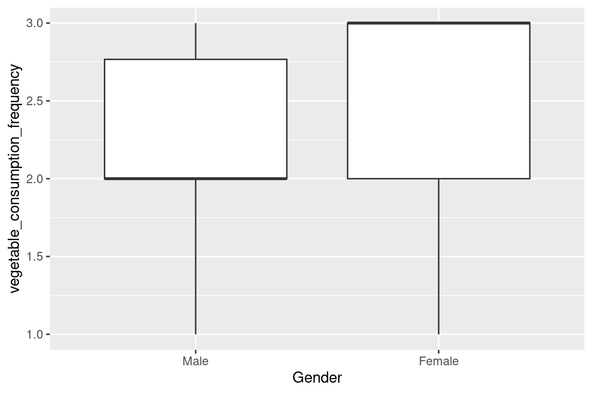
Diagrama de densidad que relaciona el consumo de vegetales con el género
ggplot(obesity, aes(x = vegetable_consumption_frequency,
color = Gender)) +
geom_density(linewidth = 0.75)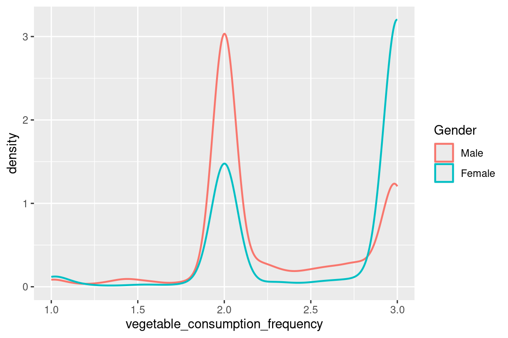
NOTA: Aquí parece haber diferencias marcadas porque parece que lasmujeres comen más vegetales que los hombres.
Diagrama de dispersión que relaciona imc con frecuencia de consumo de vegetales por género
ggplot(
data = obesity,
mapping = aes(x = vegetable_consumption_frequency, y = imc,
color = Gender)
) +
geom_point()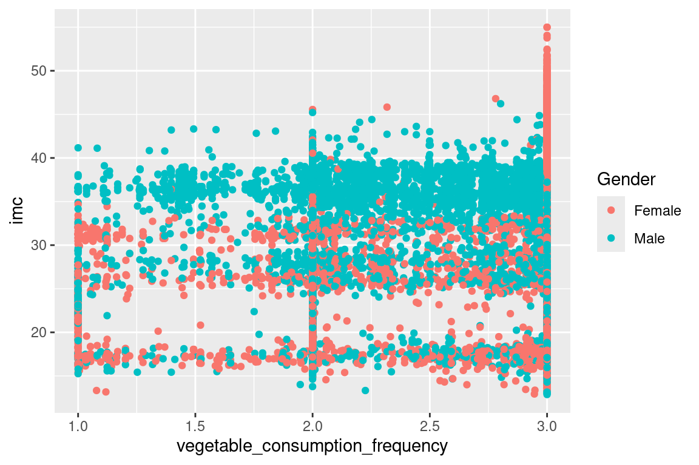
Facetar por consumo de vegetales e imc en relación facetado por género
ggplot(obesity, aes(x = vegetable_consumption_frequency, y = imc)) +
geom_point(aes(color = Gender)) +
facet_wrap(~Gender)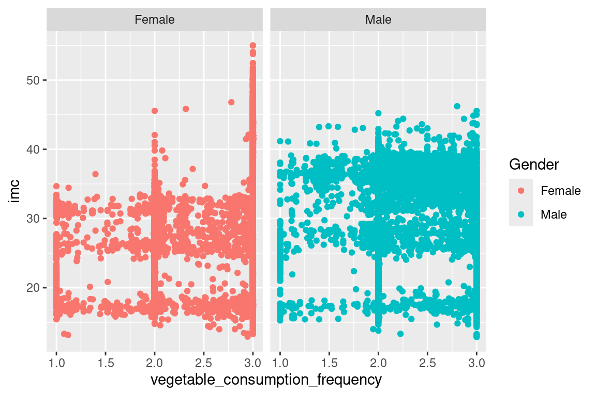
NOTA: Parece que sí comen más vegetales los hombres y tienen un imc mayor
Facetar por consumo de vegetales e imc en relación y facetado por tipo de obesidad
ggplot(obesity, aes(x = vegetable_consumption_frequency, y = imc)) +
geom_point(aes(color = Gender)) +
facet_wrap(~tipo_obesidad)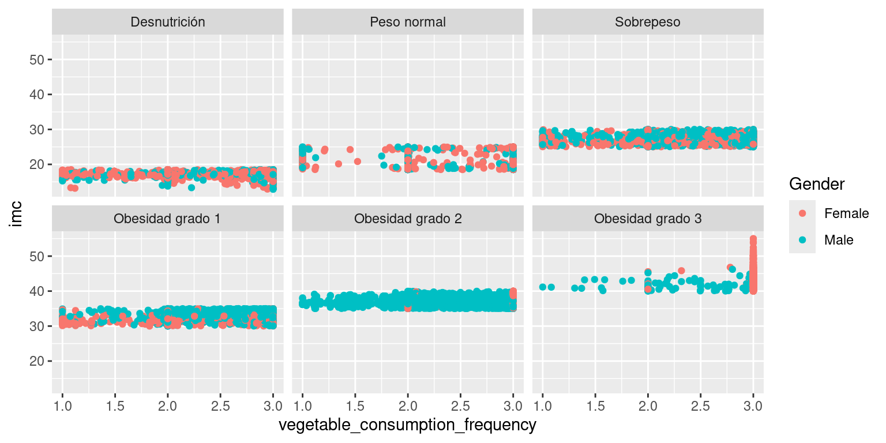
NOTA: Este facetado es muy importante porque muestra que en general los hombres llegan a tener mayor imc que las mujeres a pesar de que si comen muchos vegetales. Sin embargo las mujeres más obesas si comen muchos vegetales también. Parecería que los vegetales no les defiende contra la obesidad ni a hombres ni a mujeres
Agrupar por género y tipo de obesidad y resumir imc y consumo de vegetales
obesity_by_gender_tipo <- obesity |>
group_by(Gender, tipo_obesidad) |>
summarize(
avg_vegetable =
mean(vegetable_consumption_frequency,
na.rm = TRUE),
avg_imc = mean(imc, na.rm = TRUE),
.groups = "drop"
)
obesity_by_gender_tipo# A tibble: 12 × 4
Gender tipo_obesidad avg_vegetable avg_imc
<chr> <fct> <dbl> <dbl>
1 Female Desnutrición 2.58 17.3
2 Female Peso normal 2.42 21.8
3 Female Sobrepeso 2.30 27.1
4 Female Obesidad grado 1 2.15 32.0
5 Female Obesidad grado 2 2.95 38.5
6 Female Obesidad grado 3 3.00 42.8
7 Male Desnutrición 2.29 17.2
8 Male Peso normal 2.31 22.4
9 Male Sobrepeso 2.20 27.3
10 Male Obesidad grado 1 2.21 32.8
11 Male Obesidad grado 2 2.39 37.0
12 Male Obesidad grado 3 2.40 41.7NOTA: Esta tabla es muy interesante porque muestra que las mujeres y los hombres que más vegetales comen son los más obesos
Diagrama de dispersión que relaciona imc con frecuencia de consumo de vegetales, por tipo de obesidad
ggplot(obesity_by_gender_tipo, aes(x = avg_imc,
y = avg_vegetable)) +
geom_point(aes(color = tipo_obesidad))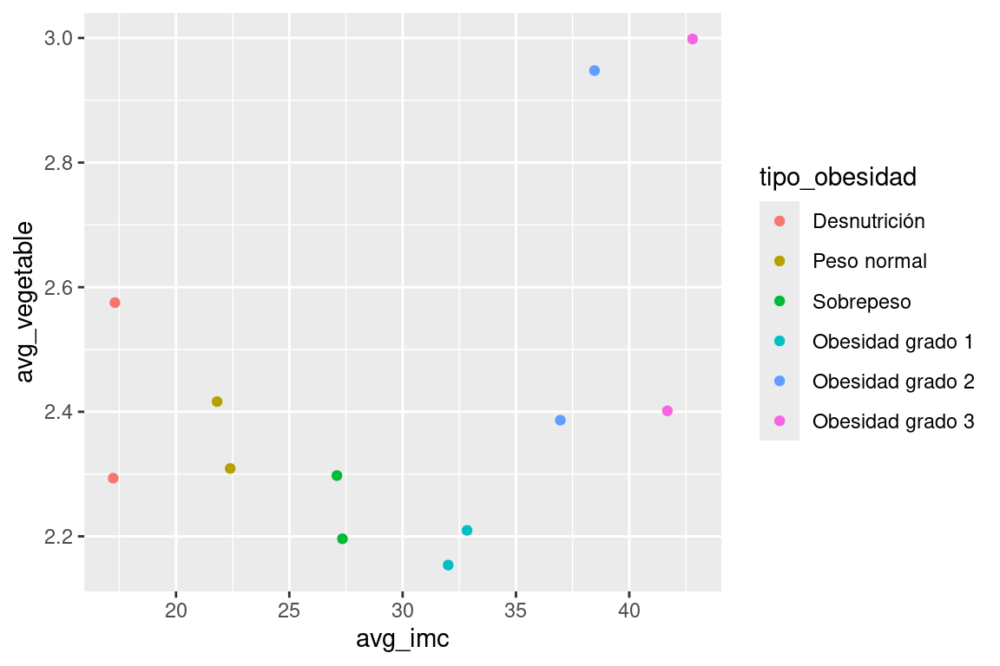
Diagrama de dispersión que relaciona imc con frecuencia de consumo de vegetales, por tipo de obesidad y facetado por género
ggplot(obesity_by_gender_tipo, aes(x = avg_imc,
y = avg_vegetable)) +
geom_point(aes(color = tipo_obesidad)) +
facet_wrap(~Gender)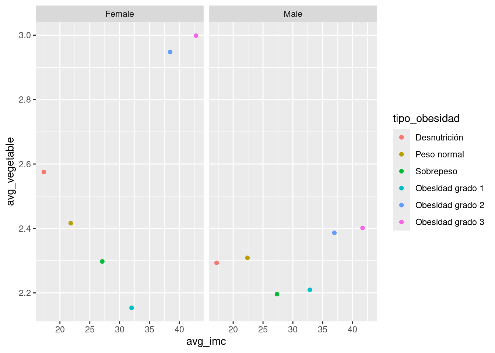
NOTA: Este gráfico es muy importante porque muestra que las mujeres y los hombres más obesos son los que más vegetales consumen. Entonces no necesariamente comer vegetales ayuda?
Visualizar el tipo de valores que tiene la variable consumo de agua
unique(obesity$daily_water_consumption)[1:10] [1] 2.763573 2.000000 1.910378 1.674061 1.979848 2.137550 3.000000 2.632253
[9] 2.530157 1.959531Conocer el tipo de la variable consumo de agua
class(obesity$daily_water_consumption)[1] "numeric"Diagrama de caja que relaciona el género por consumo diario de agua
ggplot(obesity, aes(x = Gender, y = daily_water_consumption)) +
geom_boxplot()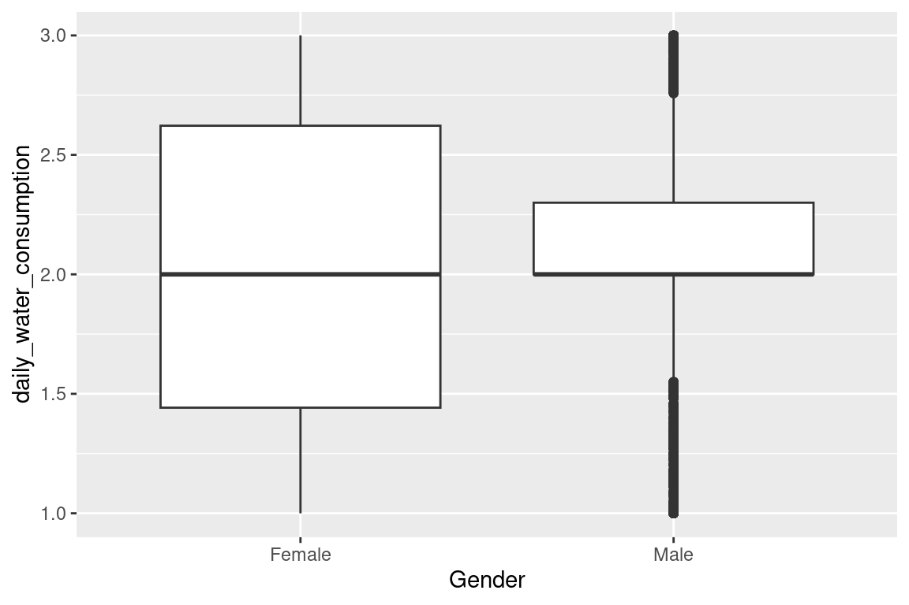
Gráfico de densidad que relaciona el consumo diario de agua con el género
ggplot(obesity, aes(x = daily_water_consumption,
color = Gender)) +
geom_density(linewidth = 0.75)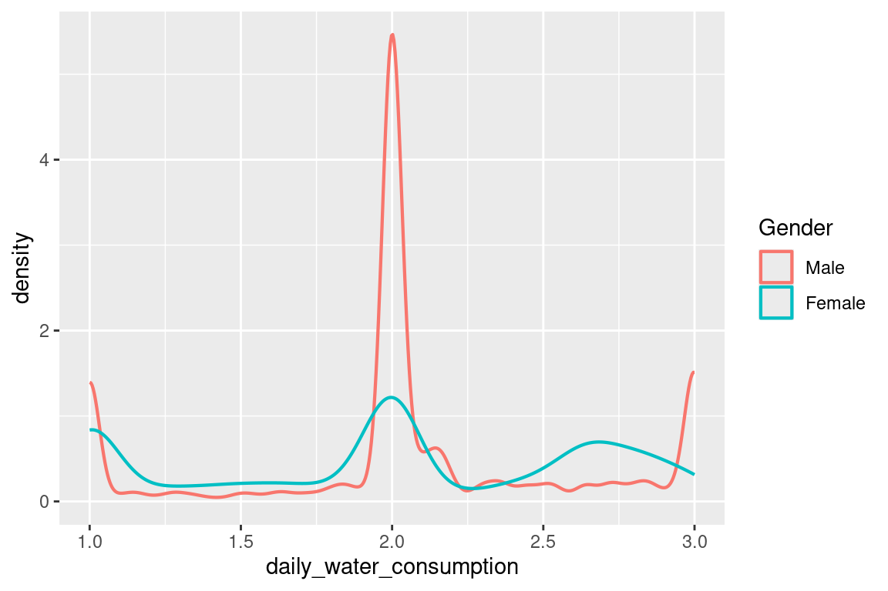
Diagrama de dispersión que relaciona imc con consumo de agua por género
ggplot(
data = obesity,
mapping = aes(x = daily_water_consumption, y = imc,
color = Gender)
) +
geom_point()
Facetar por consumo de agua e imc en relación y facetado por género
ggplot(obesity, aes(x = daily_water_consumption, y = imc)) +
geom_point(aes(color = Gender)) +
facet_wrap(~Gender)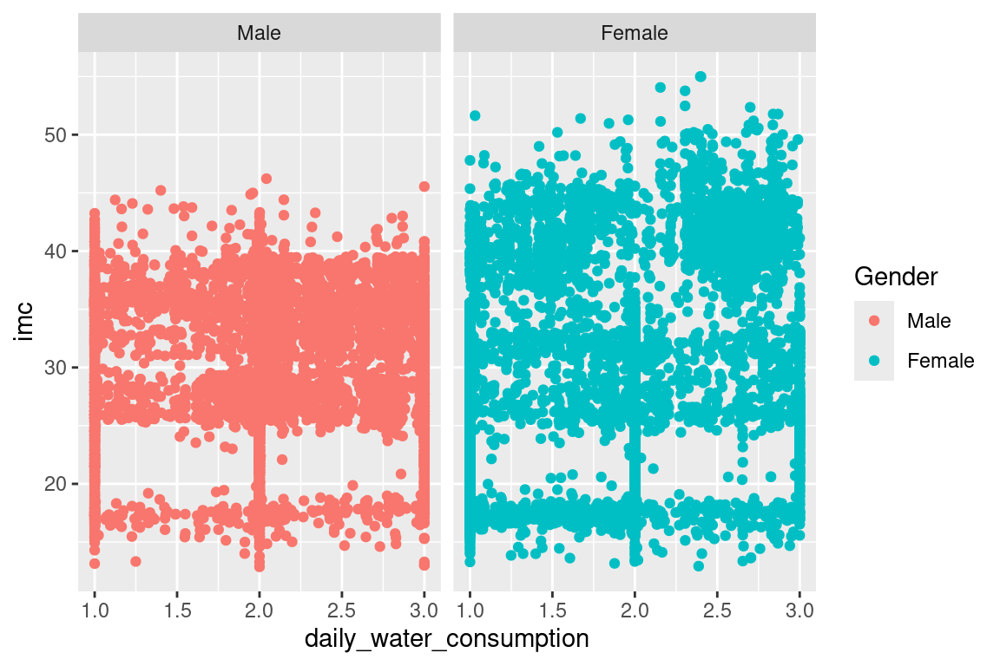
Facetar por consumo de agua e imc en relación y facetado por tipo de obesidad
ggplot(obesity, aes(x = daily_water_consumption, y = imc)) +
geom_point(aes(color = Gender)) +
facet_wrap(~tipo_obesidad)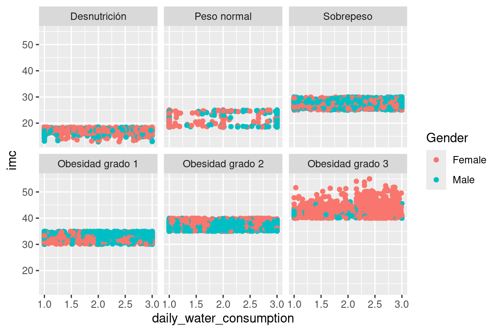
Conocer el tipo de valores que tiene la variable actividad física
unique(obesity$physical_activity_frequency)[1:10] [1] 0.000000 1.000000 0.866045 1.467863 1.967973 1.930033 0.598655 2.000000
[9] 1.425712 3.000000Conocer el tipo de la variable frecuencia de actividad física
class(obesity$physical_activity_frequency)[1] "numeric"Diagrama de caja que relaciona la densidad de la frecuencia de actividad física con el género
ggplot(obesity, aes(x = Gender, y = physical_activity_frequency)) +
geom_boxplot()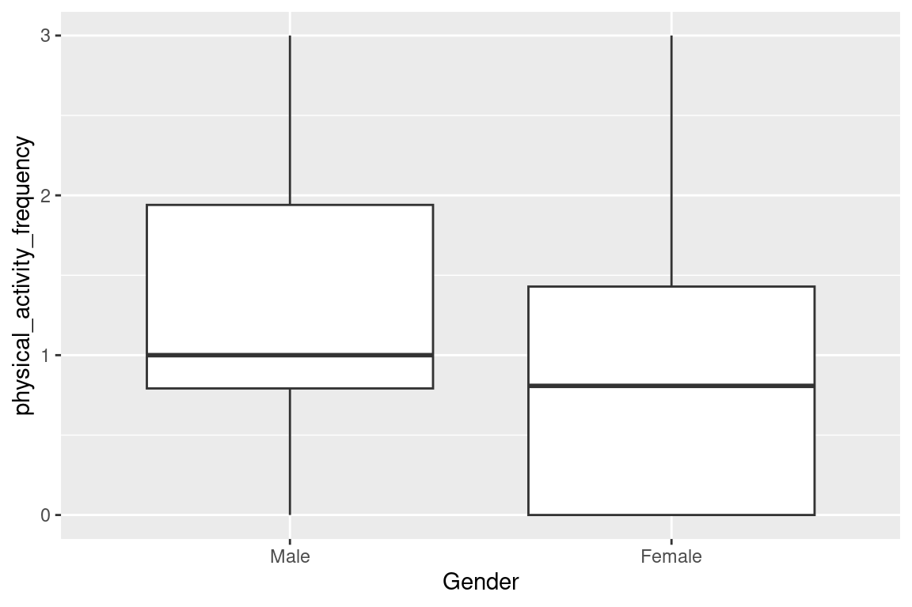
NOTA: La mediana de actividad física es ligeramente menor en mujeres pero su rango intercuartil inferior al 50% también es bastante menor en las mujeres. Vale la pena investigar
Gráfico de densidad que ralciona la actividad física con el género
ggplot(obesity, aes(x = physical_activity_frequency,
color = Gender)) +
geom_density()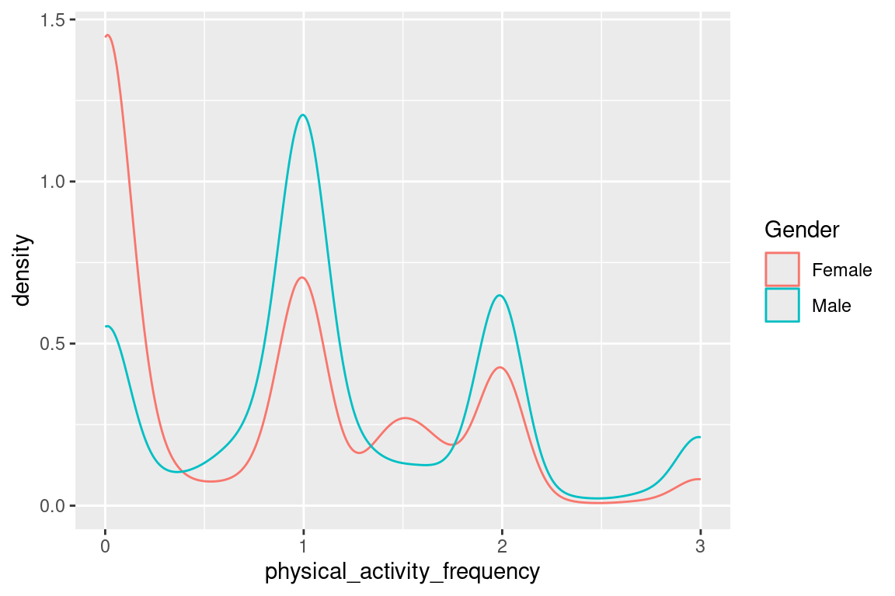
NOTA: Se observa cláramente que hay más mujeres que no hacen nada de actividad física, posteriormente es mayor la actividad física que hacen los hombres. Vale la pena investigar.
Diagrama de dispersión que relaciona actividad física e imc por género y facetado por tipo de obesidad
ggplot(obesity, aes(x = physical_activity_frequency, y = imc)) +
geom_point(aes(color = Gender)) +
facet_wrap(~tipo_obesidad)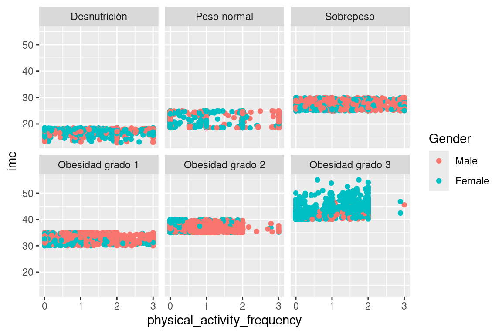
NOTA: Otra vez se ve que las mujeres con obesidad grado 3 hacen mucho más ejercicio que los hombres , mientras que los hombres con obesidad grado 1 y 2 hacen más ejercicio que las mujeres.
Agrupar por género y tipo de obesidad y resumir la actividad física y el imc
obesity_by_gender_tipo_physical <- obesity |>
group_by(Gender, tipo_obesidad) |>
summarise(
avg_physical_activity = mean(physical_activity_frequency,
na.rm = TRUE),
median_physical_activity = median(physical_activity_frequency,
na.rm = TRUE),
avg_imc = mean(imc, na.rm = TRUE),
.groups = "drop"
)
obesity_by_gender_tipo_physical# A tibble: 12 × 5
Gender tipo_obesidad avg_physical_activity median_physical_activ…¹ avg_imc
<chr> <fct> <dbl> <dbl> <dbl>
1 Female Desnutrición 1.09 1 17.3
2 Female Peso normal 1.04 1 21.8
3 Female Sobrepeso 0.889 1 27.1
4 Female Obesidad grado 1 0.617 0.170 32.0
5 Female Obesidad grado 2 0.176 0.0437 38.5
6 Female Obesidad grado 3 0.659 0.0168 42.8
7 Male Desnutrición 1.36 1.66 17.2
8 Male Peso normal 1.39 1 22.4
9 Male Sobrepeso 1.23 1 27.3
10 Male Obesidad grado 1 1.11 1 32.8
11 Male Obesidad grado 2 1.01 1 37.0
12 Male Obesidad grado 3 0.906 1 41.7
# ℹ abbreviated name: ¹median_physical_activityDiagrama de dispersión que relaciona imc con actividad física, por tipo de obesidad
ggplot(obesity_by_gender_tipo_physical,
aes(x = avg_imc, y = avg_physical_activity)) +
geom_point(aes(color = tipo_obesidad))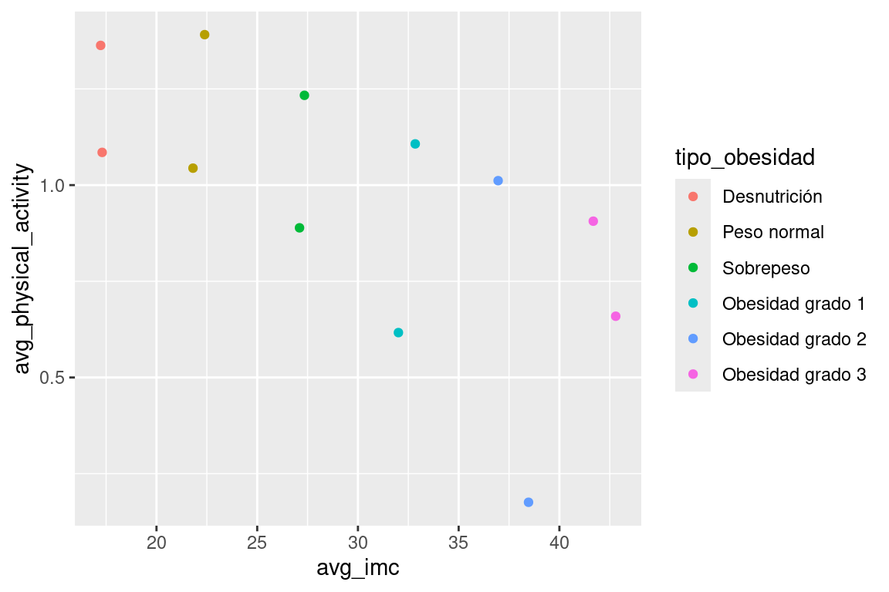
Diagrama de dispersión que relaciona imc con actividad física, por tipo de obesidad
ggplot(obesity_by_gender_tipo_physical,
aes(x = avg_imc, y = median_physical_activity)) +
geom_point(aes(color = tipo_obesidad))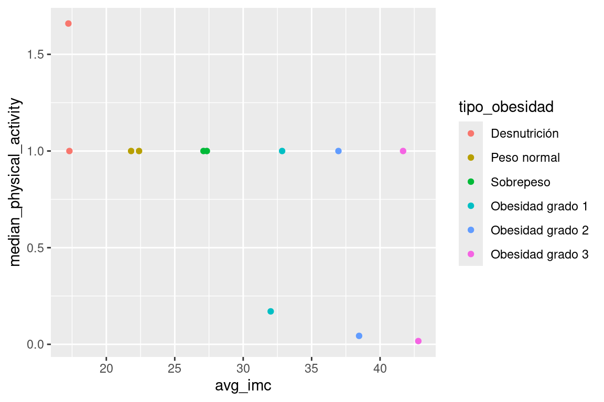
Diagrama de dispersión que relaciona imc con actividad física, por tipo de obesidad y facetado por género
ggplot(obesity_by_gender_tipo_physical,
aes(x = avg_imc, y = avg_physical_activity)) +
geom_point(aes(color = tipo_obesidad)) +
facet_wrap(~Gender)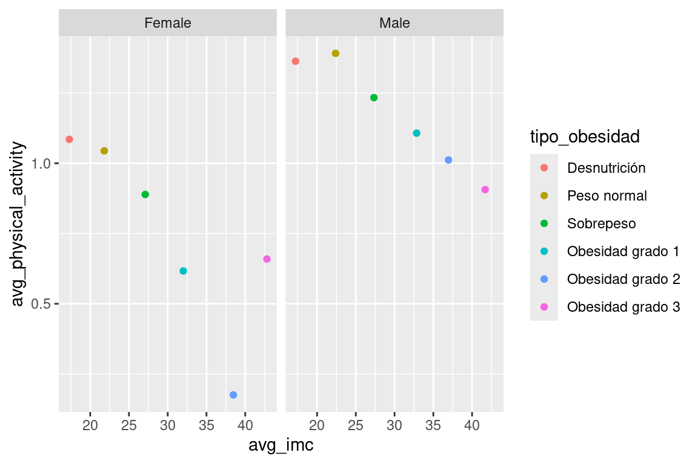
Diagrama de dispersión que relaciona imc con actividad física, por tipo de obesidad y facetado por género
ggplot(obesity_by_gender_tipo_physical,
aes(x = avg_imc, y = median_physical_activity)) +
geom_point(aes(color = tipo_obesidad)) +
facet_wrap(~Gender)
Diagrama de caja que relaciona tipo de obesidad con actividad física
ggplot(obesity, aes(x = tipo_obesidad,
y = physical_activity_frequency)) +
geom_boxplot()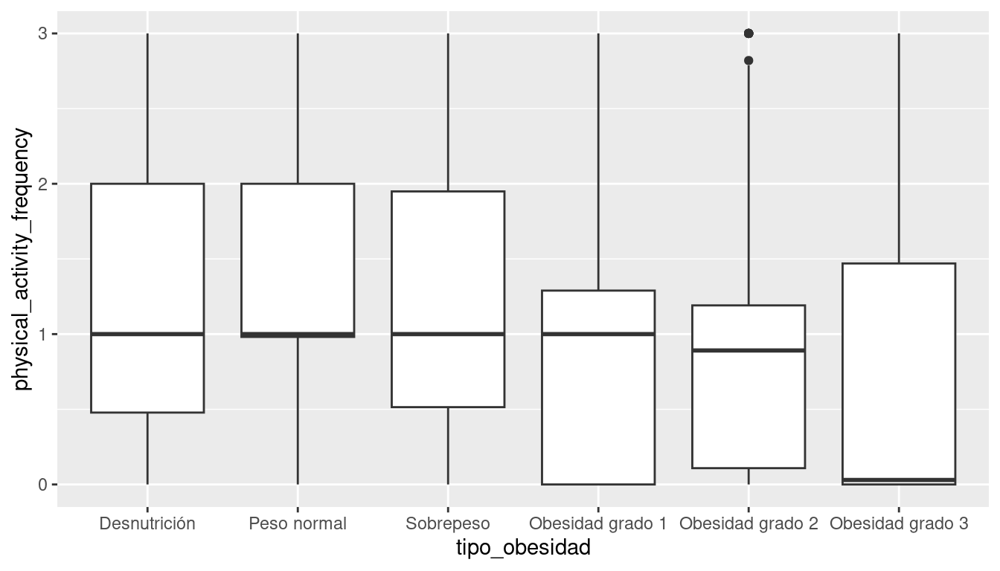
Agrupar por tipo de obesidad y resumir por actividad física
obesity |>
group_by(tipo_obesidad) |>
summarise(
median_physical_activity = median(physical_activity_frequency,
na.rm = TRUE),
avg_physical_activity = mean(physical_activity_frequency,
na.rm = TRUE),
.groups = "drop"
)# A tibble: 6 × 3
tipo_obesidad median_physical_activity avg_physical_activity
<fct> <dbl> <dbl>
1 Desnutrición 1 1.19
2 Peso normal 1 1.21
3 Sobrepeso 1 1.11
4 Obesidad grado 1 1 0.919
5 Obesidad grado 2 0.891 0.806
6 Obesidad grado 3 0.0297 0.667min(obesity$physical_activity_frequency) # produce: 0[1] 0max(obesity$physical_activity_frequency) # produce: 3[1] 3Conocer el tipo de valores que toma la variable medio de transporte
unique(obesity$transportation_mode)[1] Public_Transportation Automobile Walking
[4] Motorbike Bike
Levels: Public_Transportation Automobile Walking Motorbike BikeConocer el tipo de la variable medio de transporte
class(obesity$transportation_mode)[1] "factor"obesity |> count(transportation_mode)# A tibble: 5 × 2
transportation_mode n
<fct> <int>
1 Public_Transportation 16687
2 Automobile 3534
3 Walking 467
4 Motorbike 38
5 Bike 32Gráfico de barras que relaciona género con medio de trasporte
ggplot(obesity, aes(x = Gender, fill = transportation_mode)) +
geom_bar(position = "fill") +
labs(y = "proportion")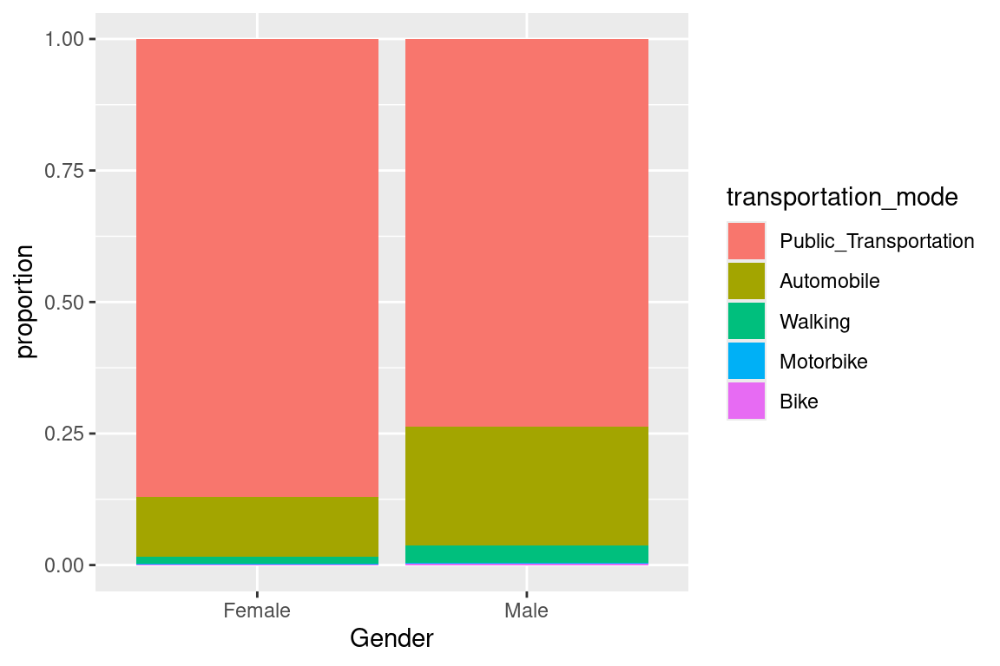
Gráfico de densidad que relaciona el imc con el medio de transporte y facetado por género
ggplot(obesity, aes(x = imc, color = transportation_mode)) +
geom_density(linewidth = 0.75) +
facet_wrap(~Gender)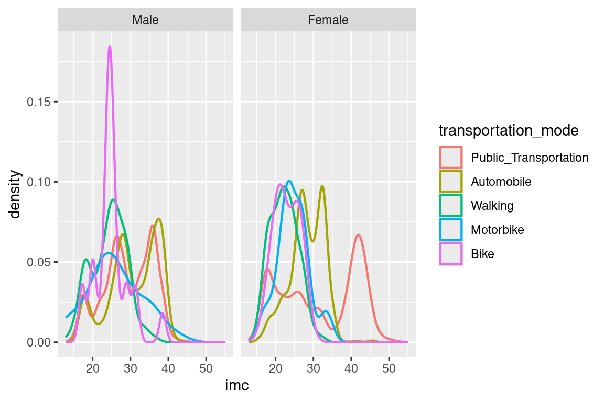
Grafico de densidad que relaciona imc con medio de transporte en Hombres
obesity |>
filter(Gender == "Male") |>
ggplot(aes(x = imc, color = transportation_mode)) +
geom_density(linewidth = 0.75) 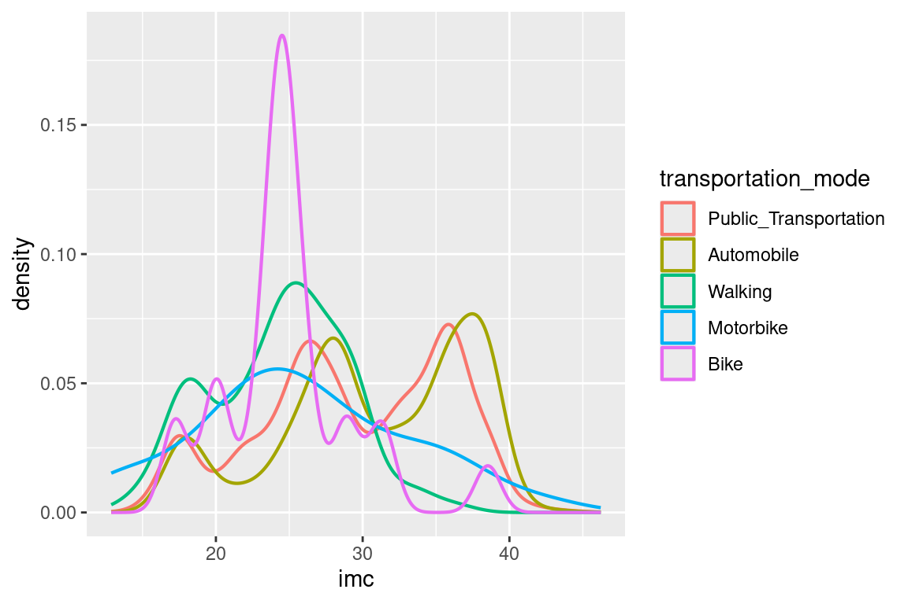
Nota: Se observa una gran densidad de Bicicleta en peso normal y una densidad moderada de caminar en el mismo segmento.
Gráfico de densidad que relaciona imc y medio de transporte filtrado por género femenino
3[1] 3#| fig-width: 6
#| fig-height: 4
obesity |>
filter(Gender == "Female") |>
ggplot(aes(x = imc, color = transportation_mode)) +
geom_density(linewidth = 0.75) 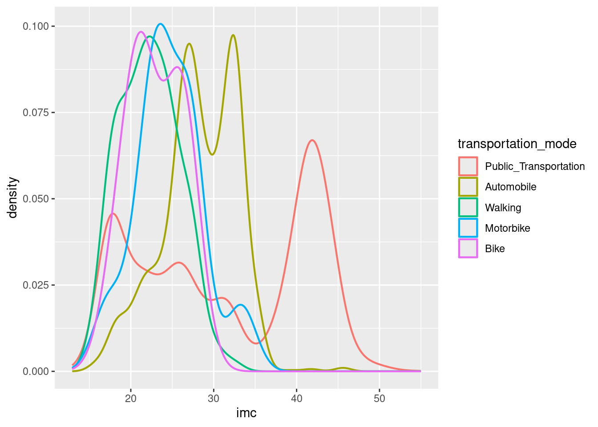
NOTA: En peso normal la densidad de caminar, ciclear y usar moto es alta y similar. En sobrepeso y obesidad ggrado 1 es mayor el uso de automovil y en obesidad mórbida es mayor el transporte público
Agrupar por género y medio de transporte y resumir por imc
obesity_by_gender_transport_sum_imc <- obesity |>
group_by(Gender, transportation_mode) |>
summarize(
avg_imc = mean(imc, na.rm = TRUE),
med_imc = median(imc, na.rm = TRUE)
) `summarise()` has grouped output by 'Gender'. You can override using the
`.groups` argument.obesity_by_gender_transport_sum_imc# A tibble: 10 × 4
# Groups: Gender [2]
Gender transportation_mode avg_imc med_imc
<chr> <fct> <dbl> <dbl>
1 Female Public_Transportation 31.5 31.2
2 Female Automobile 28.3 28.3
3 Female Walking 22.2 22.1
4 Female Motorbike 24.7 24.0
5 Female Bike 23.0 22.0
6 Male Public_Transportation 29.3 29.2
7 Male Automobile 30.7 31.2
8 Male Walking 24.3 24.8
9 Male Motorbike 25.8 24.6
10 Male Bike 24.9 24.4Diagrama de caja que relaciona el medio de transporte con avg_imc por género
ggplot(obesity_by_gender_transport_sum_imc,
aes(x = transportation_mode, y = avg_imc)) +
geom_boxplot(aes(color = Gender))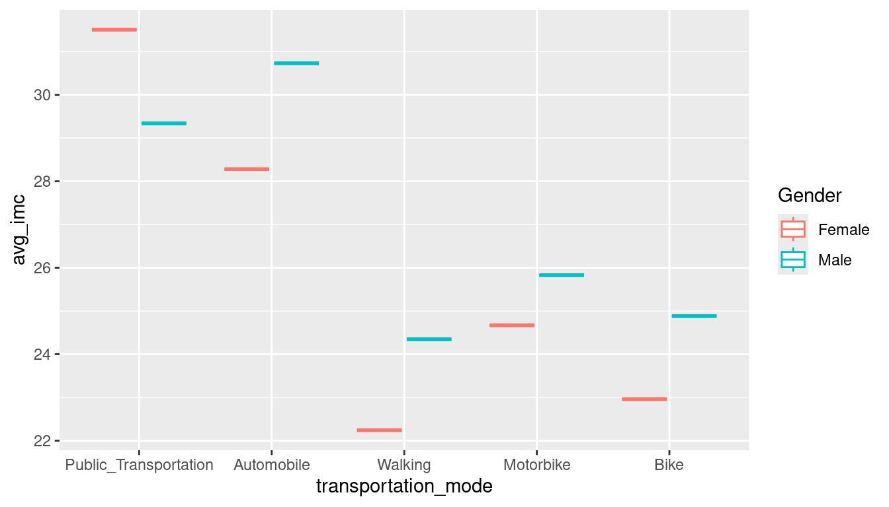
Nota: Este es el gráfico que mejor se adapta. Aunque sólo tiene un valor y se ve una raya, no una caja, nos orienta para ver las diferencias de imc según los medios de transporte y por género. El problema en estos casos es que con un sólo valor (por cada género, facetar es imposible)